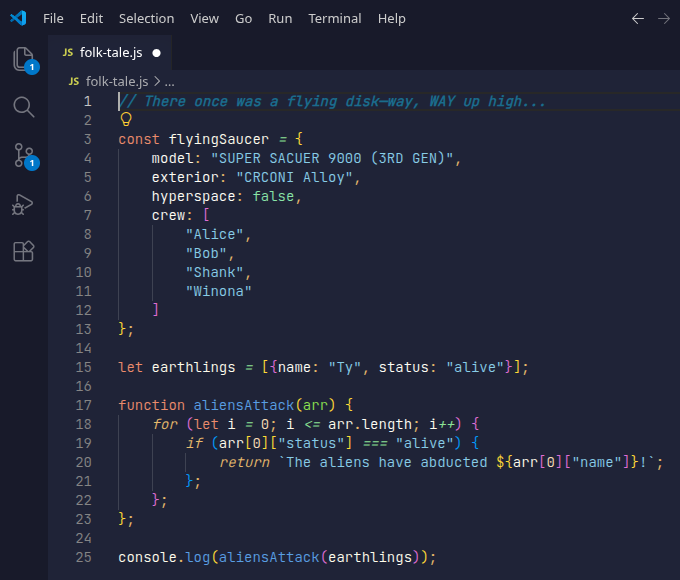
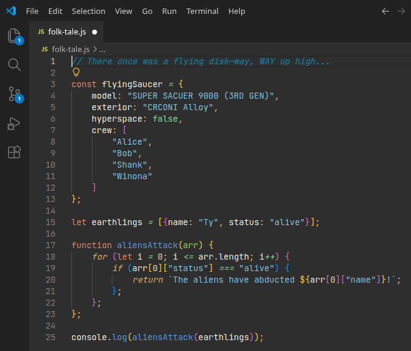

Welcome To The Archive
Hi, my name is Aiden, I'm a front-end developer. I've been making websites for about 1 year. I first got into coding when I starting making games with Unity when I was 11. I quickly figured out that wasn't for me and two years later I picked up web development.
I try something new in every single one of my real-world projects. This is how I learn so quickly and actually remember things.
My hobbies outside of web development are:
- Running (long-distance, 10+ mile runs)
- Making Music (my SoundCloud)
- Hiking, Biking, etc.,
Anyways, enjoy the website prepared for you below!
Start scrolling to explore!
Superstitions

Dark-Theme

Light-Theme
Superstitions is a theme I made in April of 2026. I made it because I wanted a theme that would look good with anti-blue light glasses. It's made to be the most comfortable on my eyes so I can work for hours on end.
The Rack
Text Here